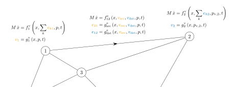

Mathematical Model
The basic mathematical model of NetworkDynamics.jl splits up the system it two parts: vertex and edge components.
The main goal of NetworkDynamics.jl is, to express the overall network dynamics as a Differential-Algebraic-Equation (DAE)
\[M\,\frac{\mathrm{d}}{\mathrm{d}t}u = f^{\mathrm{nw}}(u, p, t)\]
where M is a (possibly singular) mass matrix, $u$ is the internal state vector of the system, $p$ are the parameters and $t$ is the time. To make this compatible with the solvers for OrdinaryDiffEq.jl, the created Network object is a callable object
nw(du, u, p, t) # mutates duwith stored mass matrix information to build an ODEProblem based on the Network.
Instead of defining $f^{\mathrm{nw}}$ by hand, ND.jl helps you to build it automatically based on a list of decentralized nodal and edge dynamics, so-called VertexModel and EdgeModel objects. Each component model $\mathrm c$ is modeled as general input-output-system
\[\begin{aligned} M_{\mathrm c}\,\frac{\mathrm{d}}{\mathrm{d}t}x_{\mathrm c} &= f^{\mathrm c}(x^{\mathrm c}, i_{\mathrm c}, p_{\mathrm c}, t)\\ y^{\mathrm c} &= g^{\mathrm c}(x^\mathrm{c}, i_{\mathrm c}, p_{\mathrm c}, t) \end{aligned}\]
where $M_{\mathrm{c}}$ is the component mass matrix, $x^{\mathrm c}$ are the component states, $i^{\mathrm c}$ are the inputs of the component and $y^{\mathrm c}$ is the output of the component. It is possible to have $\mathrm{dim}(x^{\mathrm{c}}) = 0$ and thus no internal states.
In the network context, the output of the edges are flow variables. The outputs of vertices are potential variables. In interconnection, the flow on the edges depends on the potentials at both ends as inputs. The potentials of the nodes depend on the incoming flows from all connected edges as an input. (Here, flow and potentials are meant in a conceptional and not necessarily physical way.)
Vertex Models
Specifically, a (single-layer) vertex model has one input, and one output. The input is an aggregation/reduction over all incident edge outputs,
\[i^{\mathrm v} = \mathop{\mathrm{agg}}\limits_k^{\text{incident}} y^{\mathrm e}_k \qquad\text{often}\qquad i^{\mathrm v} = \sum_k^{\text{incident}} y^{\mathrm e}_k\]
The full vertex model
\[\begin{aligned} M^{\mathrm v}\,\frac{\mathrm{d}}{\mathrm{d}t}x^{\mathrm v} &= f^{\mathrm v}(u^{\mathrm v}, i^{\mathrm v}, p^{\mathrm v}, t)\\ y^{\mathrm v} &= g^{\mathrm v}(u^{\mathrm v}, i^{\mathrm v}, p^{\mathrm v}, t) \end{aligned}\]
corresponds to the Julia functions
function fᵥ(dxᵥ, xᵥ, e_aggr, pᵥ, t)
# mutate dxᵥ
nothing
end
function gᵥ(yᵥ, xᵥ, e_aggr, pᵥ, t)
# mutate yᵥ
nothing
end
vertf = VertexModel(; f=fᵥ, g=gᵥ, mass_matrix=Mᵥ, ...)Edge Models
In contrast to vertex models, edge models in general have two inputs and two outputs, both for source and destination end of the edge. We commonly use src and dst to describe the source and destination end of an edge respectively.
Mathematically, in a system defined on an undirected graph there is no difference between the edge $(1,2)$ and $(2,1)$, the edge has no direction. However, from an implementation point of view we always need to have some kind of ordering for function arguments, state order and so on. For undirected graphs, Graphs.jl chooses the direction of an edge v1->v2 such that v1 < v2.
The inputs of the edge are just the outputs of the two nodes at both ends. The output is split into two: the dst output goes to the input of the vertex at the destination end, the src output goes to the input of the vertex at the src end.
The full model of an edge
\[\begin{aligned} M^{\mathrm e}\,\frac{\mathrm{d}}{\mathrm{d}t}x^{\mathrm e} &= f^{\mathrm e}(u^{\mathrm e}, y^{\mathrm v}_{\mathrm{src}}, y^{\mathrm v}_{\mathrm{dst}}, p^{\mathrm e}, t)\\ y^{\mathrm e}_{\mathrm{dst}} &= g_\mathrm{dst}^{\mathrm e}(u^{\mathrm e}, y^{\mathrm v}_{\mathrm{src}}, y^{\mathrm v}_{\mathrm{dst}}, p^{\mathrm e}, t)\\ y^{\mathrm e}_{\mathrm{src}} &= g_\mathrm{src}^{\mathrm e}(u^{\mathrm e}, y^{\mathrm v}_{\mathrm{src}}, y^{\mathrm v}_{\mathrm{dst}}, p^{\mathrm e}, t) \end{aligned}\]
corresponds to the Julia functions
function fₑ(dxₑ, xₑ, v_src, v_dst, pₑ, t)
# mutate dxᵥ
nothing
end
function gₑ(y_src, y_dst, xᵥ, v_src, v_dst, pₑ, t)
# mutate y_src and y_dst
nothing
end
vertf = EdgeModel(; f=fₑ, g=gₑ, mass_matrix=Mₑ, ...)The sign convention for both outputs of an edge must be identical, typically, a positive flow represents a flow into the connected vertex. This is important, because the vertex only receives the flows, it does not know whether the flow was produce by the source or destination end of an edge.
y_src y_dst
V_src o───←─────────→───o V_dst
Single Sided Edge Outputs
Often, edge outputs will possess some symmetry which makes it more convenient to define "single sided" edge output functions
function g_single(y, xᵥ, v_src, v_dst, pₑ, t)
# mutate y
nothing
endThere are multiple wrappers available to automaticially convert them into double-sided edge output functions:
Directed(g_single)builds a double-sided function which only couples to the destination side.Symmetric(g_single)builds a double-sided function in which both ends receivey.AntiSymmetric(g_single)builds a double-sided function where the destination receivesyand the source receives-y.Fiducial(g_single_src, g_singl_dst)builds a double-sided edge output function based on two single sided functions.
Feed Forward Behavior
The most general version of the component models can contain direct feed forwards from the input, i.e. the edge output might depend directly on the connected vertices or the vertex output might depend directly on the aggregated edge input.
Whenever possible, you should define output functions without feed forwards, i.e.
gᵥ_noff(yᵥ, xᵥ, pᵥ, t)
gₑ_noff([y_src,] y_dst, xᵥ, pₑ, t)instead of the more general
gᵥ(yᵥ, xᵥ, e_aggr, pᵥ, t)
gₑ([y_src], y_dst, xᵥ, v_src, v_dst, pₑ, t)NetworkDynamics cannot couple two components with feed forward to each other. It is always possible to transform feed forward behavior to an internal state x with mass matrix entry zero to circumvent this problem. This transformation can be performed automatically by using ff_to_constraint.
As of 11/2024, vertices with feed forward are not supported at all. Use ff_to_constraint to transform them into vertex model without FF.
Concretely, NetworkDynamics distinguishes between 4 types of feed forward behaviors of g functions based on the FeedForwardType trait. The different types the signature of provided function g. Based on the signatures avaialable, ND.jl will try to find the correct type automaticially. Using the ff keyword in the constructors, the user can enforce a specific type.
g!(outs..., ins..., p, t) # abstractly
g!(out_dst, v_src, v_dst, p, t) # single-sided edge
g!(out_src, out_dst, v_src, v_dst, p, t) # double-sided edge
g!(v_out, e_aggr, p, t) # single layer vertexg!(outs..., x, ins..., p, t) # abstractly
g!(out_dst, x, v_src, v_dst, p, t) # single-sided edge
g!(out_src, out_dst, x, v_src, v_dst, p, t) # double-sided edge
g!(v_out, x, e_aggr, p, t) # single layer vertexg!(outs..., x, p, t) # abstractly
g!(out_dst, x, p, t) # single-sided edge
g!(out_src, out_dst, x, p, t) # double-sided edge
g!(v_out, x, p, t) # single layer vertexg!(outs..., x) # abstractly
g!(out_dst, x) # single-sided edge
g!(out_src, out_dst, x) # double-sided edge
g!(v_out, x) # single layer vertex